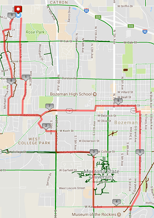
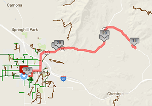
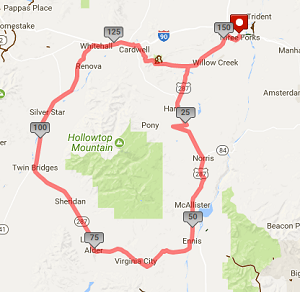

9.30 MI FIXED GEAR
- Date: July 29, 2018
- Distance: 9.3 miles
- Cost: $35.00
This is a 9.3 mi Bike Ride in Bozeman, MT, United States.
The Bike Ride has a total ascent of 026 ft and has a maximum
elevation of 4,952.82 ft.
Jason Creek
- Date: August, 21, 2018
- Distance: 30.32 miles
- Cost: $75
This is a 30.32 mi Bike Ride in Bozeman, MT, United States.
LAP AROUND THE TOBACCO ROOTS
- Date: September, 27, 2018
- Distance: 154.34 miles
- Cost: $225
This is a 154.34 mi Bike Ride in Three Forks, MT.
The Bike Ride has a total ascent of 4623.18 ft
and has a maximum elevation of 6,924.15 ft.